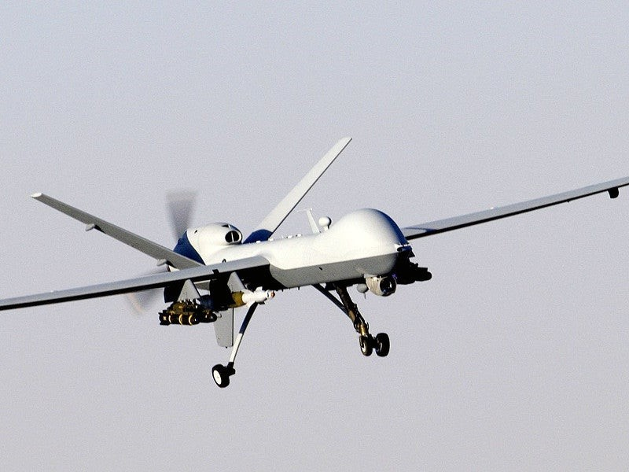

Modern Warfare
Drone Warfare
Pilotless vehicles were initially developed in the UK in the First World War and development continued throughout the interwar period. They began to be used on a larger scale during the Vietnam War by the US as Reconnaissance UAVs (Unmanned Ariel Vehicles), but they were also used as combat decoys, for finding targets to launch missiles, and for dropping leaflets and posters for psychological propaganda [1]. Drones were used at an even greater scale in Afghanistan in the 2000s where they moved from taking a more surveillance focussed role, to an active combat role, as this was the era of the first known lethal drone strike [2]. Today, drones have been used in the Russia-Ukraine war, both as direct attacks on Ukrainian cities and as threatening surveillance in other countries in Europe including Germany and Norway, displaying how useful they are [3].
 [4]The Aerodynamics of Drones
Drone flight (and any aircraft flight) involves four forces:
Lift: The upward force that counteracts weight and allows the drone to remain in the air. Lift arises due to the pressure difference between the top and the bottom of the wing of the aircraft and the downward deflection of air, which produces an upward force equal and opposite to it. The lift equation is given by
$$
L = \frac{1}{2}\rho v^2 C_L S
$$
where $\rho$ is the air density, $v$ is the air speed, $C_L$ is the lift coefficient, and $S$ is the wing area [5].This links to warfare as military drones often require efficient lift to save energy to carry out long surveillances. As well as this, high altitude drones need larger wings due to lower air density to stay airborne.
Weight: Downward force exerted by Earth's gravitational field. This means drones with more mass (mass is often increased by equipment such as weapons, cameras or sensors) need greater lift, which uses more energy and requires better propellers or more powerful motors. The weight equation is given by
$$
W = mg
$$
where $m$ is the mass of the drone and $g$ is the acceleration due to gravity [6].
Military drones are often also made using lightweight materials, for example:
Carbon Fiber Reinforced Polymer (CFRP) - This is used for wings, airframes, propeller arms. It has a high strength to weight ratio and low density leading to an overall lower weight. It also has a high stiffness which reduces the amount of potential aerodynamic deformation while in flight.
Fiberglass Composites – These are used for fuselages (the main body of drone, including electronics and flight systems) and radar covers. It is a lightweight material. It also allows EM radar waves to go straight through with little absorption or reflection so the drone is not easy to detect.
Titanium alloys – These are used to house the engine and other particularly important parts as it has very high strength and so is unlikely to deform. It is also heat resistant so it works well at protecting specific parts of the drone.
Thrust: The upward force produced by the propulsion system of the drone. The propellers push the air backwards and this change in momentum creates thrust in the forward direction. This force is given by
$$
F = \dot{m} (v_{exit} - v_{entry})
$$
where $\dot{m}$ is the mass flow rate of the air, $v_{exit}$ is the velocity of the air as it leaves the propeller system, and $v_{entry}$ is the velocity of the air as it enters the propeller system [7].
Thrust in drones is produced by electric motors (which produce an electromagnetic torque) and batteries or internal combustion engines. However it is also good to consider the noise level of each type of motor as this is key for drone detection. This is important in a war setting because thrust determines how fast a drone can accelerate and therefore how fast it can escape an attack.
Drag: The force opposing motion through a fluid (air, in the case of drones). This is given by
$$
D = \frac{1}{2}\rho v^2 C_D S
$$
where $C_D$ is the drag coefficient [8]. The types of drag include parasitic drag (from the body, wings, weapons etc of the drone), induced drag (caused by generating lift), and skin friction (due to the viscosity of the air). The reduction of drag is important in drones because it increases two-fold with speed and external weaponry can significantly increase it. Drag can be decreased by using streamlined designs, increasing the efficiency and flight time.
MQ-9 Reaper Flight Conditions Simulator
This simulator models how lift and drag change for the MQ-9 Reaper drone when operating conditions change. The aircraft parameters are fixed using engineering estimates.
MQ-9 Reaper parameters (estimated):
- Wing Area S = 26 m²
- Lift Coefficient CL = 0.6 (cruise)
- Drag Coefficient CD = 0.04 (cruise)
Change velocity or air density to simulate different flight speeds or altitudes. Lower air density represents high-altitude flight. The MQ-9 Reaper operates at a maximum cruise velocity of 125 m/s and minimum air density 0.187 kg/m³ (at 50,000 ft) [9][10].
Drag: 0 N
Control and Navigation
When a drone is flying it must know its speed, direction and orientation at all times, and so it uses sensors and feedback systems in order to control this.
One key movement that a drone must control is its rotation. Drones can rotate about the three axes: roll (tilting left and right); pitch (tilting forwards and backwards); and yaw (turning left and right horizontally). The equation for torque dictates a drone's orientation in the air, by showing how changing the motor forces (and so, changing the acceleration) alters the torque, the turning force that allows it to rotate. The equation for torque is given by $$ \tau = I \alpha $$ where $I$ is the moment of inertia and $\alpha$ is the angular acceleration of the drone [11].
Some drones also use MEMS gyroscopes (devices that maintain orientation and angular velocity, using the principle of momentum of angular velocity). As the drone rotates, internal vibrating parts of it experience a sideways force (the Coriolis effect) and this force is proportional to the angular velocity. The gyroscope outputs information about its current angular velocity and tilt. This information is processed by a PID (Proportional-Integral-Derivative) controller which compares it with the desired angular velocity and tilt of the drone and calculates by how much the motor speed needs to be altered, so that the drone can restabilize.
Another important aspect of drone movement is acceleration. Drones are fitted with accelerometers which rely on Newton's 2nd Law:
$$
F = ma
$$
where $m$ is the mass of the drone and $a$ is its acceleration [12].
This equation is used to calculate linear acceleration in the x,y,z planes. The accelerometer contains a small mass which is suspended by springs. This mass lags behind when the drone accelerates and the accelerometer casing moves with it. This compresses or stretches a spring (depending on direction) and a restoring force develops in the spring. The displacement of the spring is measured. This information is also processed by a PID controller which tells it how to correct any undesired changes in speed or direction. Some drones use MEMS accelerometers instead, where there is no spring, rather the mass forms part of a capacitor. As it moves the distance between the plates of the capacitor changes, causing the capacitance to change according to
$$
C = \frac{\epsilon A}{d}
$$
where $\epsilon$ is the dielectric permittivity, $A$ is the area of the plates, and $d$ is the distance between the plates [13]. This generates an electrical signal which is then processed by the PID controller.
Sensors and Target Detection
Modern drones make use of sensors to detect and attack enemy targets. These sensors measure certain physical phenomena and convert the information into electrical signals which allows it to be processed by a computer or an autonomous system.
Optical Cameras: These measure reflected visible electromagnetic waves (visible light - wavelength range: 400-700nm). Objects that are in the path of the drone reflect light due to their colour and texture. This light is detected by a lens on the drone which uses refraction to focus it, which is governed by Snell's Law:
$$
n_1 sin\theta_1 = n_2 sin\theta_2
$$
where $n_1$ and $n_2$ are the refractive indices of the initial and final media respectively, and $\theta_1$ and $\theta_2$ are the angles of incidence and refraction respectively [14].
This, now focussed, image is detected by a sensor which uses the photoelectric effect to emit electrons and the intensity of the electrons is governed by the intensity of the light. More electrons generate a stronger signal, which can be used to determine how close an object is. However, optical cameras do have limited use due to poor performance in darkness, smoke or dust. So they are not often sufficient alone for combat.
Infrared (thermal imaging) sensors: These measure infrared radiation emitted by objects (wavelength range: 8-14μm - long-wave IR). The background physics follows that of blackbody radiation - all objects that have temperature above 0K emit radiation according to the principle of blackbody radiation. The power radiated by an object is given by
$$
P = \sigma A T^4
$$
where $\sigma$ is the Steffan-Boltzmann constant, $A$ is the area, and $T$ is the temperature [15].
Hotter objects emit more radiation. The imaging cameras detect the radiation and focus it onto a sensor array, which converts the information into an electrical signal which can be interpreted as a colourful image, with different colours showing different temperatures. Therefore, thermal imaging sensors are very useful in warfare because they can detect anything that emits heat, including humans, vehicles that are running, and weapons that have recently been or are being fired. They can be detected even at night and in poor visibility. However, thermal imaging does have limitations, including lower heat contrasts in hotter settings, decreased effectiveness in heavy rain, or if objects are thermally shielded (temperature minimized through heat transfer by insulation or reflection).
Radar (Radio Detection and Ranging): This measures speed, distance and shape of objects using radiowave and microwave radiation (wavelength range: 1mm to 1m). Radar emits an electromagnetic pulse (short, intense burst). This pulse reflects off of an object and its echo returns to a detector. Distance is calculated by multiplying the time between the signal being sent out and its echo being detected with the speed of EM waves, and then dividing it by 2. If the target is moving, the Doppler Effect must be used. The observed frequency from the Doppler Effect is given by
$$
f_0 = f_s \frac{v \pm v_0}{v \mp v_s}
$$
where $f_s$ is the source frequency, $v$ is the sound wave velocity, $v_0$ is the observer velocity, and $v_s$ is the source velocity [16].
This is useful in a military setting because it works in all weather conditions and light conditions and is really good for measuring the distance of objects that are far away. Radar's limitations included high power usage and ineffectiveness against stealth technology - vehicles and weapons can be designed using certain shapes and angles that deflect the waves in the wrong direction, or they are coated with materials that absorb the waves rather than reflect them.
Lidar (Light Detection and Ranging): This is a very similar concept to Radar but uses laser pulses (infrared/visible light) rather than radiowave or microwave pulses. The background physics is also similar to that of Radar (pulses sent out, return time measured and distance calculated). However, Lidar is used more to make detailed, high resolution 3D maps, rather than work out the distance to objects. Military uses include terrain mapping, avoiding certain obstacles and urban reconnaissance. However, its limitations are that it is less effective in rain, fog, smoke and dust (due to these things blocking the light signals being blocked) and, because it is an active sensor (constantly sending out signals), it is more easily detected by the enemy than passive sensors.
Communication Systems
Military drones use radio-frequency (RF) electromagnetic waves to communicate with other drones, satellites and on-the-ground operators. This means they transmit information. The types of information include control commands (direction and speed), sensor data (video and radar), and status details (battery and potential damage). These commands use microwave EM radiation in the GHz frequency range.
RF communication uses electromagnetic wave propagation (at speed of light). It uses wave modulation to carry certain signals
Amplitude Modulation (AM): Frequency and phase remain constant - only amplitude (strength of wave) changes. Stronger signal = larger oscillation peaks and weaker signal = smaller oscillation peaks. The variations of strength are what conveys the message. However AM is rarely used in a military setting because it is affected significantly by noise. The electric field for this signal is given by $$ E(t) = [A + m(t)]sin(2 \pi f t) $$ where $t$ is the time, $A$ is the amplitude, $m$ is the information signal, and $f$ is the frequency [17].
Frequency Modulation (FM): Only frequency is varied (around a central value) - this changes the phase indirectly, but all else is kept constant. Information is encoded as small shifts in the frequency. FM is far more reliable in a military setting than AM as it is not affected much by noise. It is mostly used for radio control and voice messages. The frequency shift is what encodes the information. The electric field for FM is given by $$ E(t) = Asin(2 \pi [f + \Delta f(t)]t) $$ where $\Delta f(t)$ is the frequenct shift [18].
Phase Modulation (PM): Amplitude and frequency stay constant, while phase is shifted either forwards or backwards. The instantaneous amplitude of the base signal modifies the phase of the carrier signal keeping amplitude and frequency constant. This delivers the message in phase shifts. PM is good because it is resistant to noise and is very efficient. It is mostly used for digital messages and encrypted links. The phase shift is what encodes the information. The electric field for this is given by $$ E(t) = Asin(2 \pi ft + \phi (t)) $$ where $\phi (t)$ is the phase shift [19].
There are numerous downsides to RF communication, however. These include
Line of sight Limitations: Radio waves travel in straight lines and therefore do not bend around the curvature of the Earth's surface, nor obstacles. The horizon limitation is approximately calculated using the equation below. This means that low-flying drones are affected, as are ones used in urban settings, as they lose connection easily. The approximation for the horizon limit is given by $$ d \approx \sqrt{2Rh} $$ where $R$ is the radius of the Earth and $h$ is the height of the drone [20].
Loss of signal strength: Radio waves spread out according to the inverse square law as they travel. This means that increasing distance greatly decreases power, making long-range drone control difficult. This power loss is described by $$ P \propto \frac{1}{r^2} $$ where $r$ is the distance from the signal transmitter [21].
Interference: When multiple signals overlap, they superpose which can distort the signal, or completely eliminate it (destructive interference).
Jamming: The deliberate transmission of RF noise at the same frequency of that being used to communicate with the drone. This overwhelms the original signal due to the waves superposing and the drone can no longer make out the commands or messages.
Signal spoofing: This is where fake signals that look like the real ones are sent to the drone, for example, fake GPS locations or fake attack commands that are meant to disrupt tactics.
Directed Energy Weapons
Directed energy weapons (DEWs) are ones that damage their target using a source of highly concentrated energy, rather than any solid projectiles. The main types include Lasers, microwaves and particle beams. Lasers are the most widely used DEW and were invented in 1960 and first used for combat purposes in the Vietnam and Falklands wars during the 1970s and 1980s [22][23]. They were used for targeting and guiding bombs. Microwave DEWs began being used in the Iraq War in the early 2000s as electronic weapons, disabling systems [24]. They have since been used in counter-drone operations in the 2020s – the UK MoD used them between 2024 and 2025 for this purpose [25].
 [26]
[26]
Lasers (Light Amplification by Stimulated Emission of Radiation)
Lasers are devices that send a highly concentrated beam of coherent light through optical amplification. The background physics of lasers involves both electromagnetism and quantum mechanics. Electrons in atoms can only exist in discrete energy levels. When an electron is excited (energy is transferred to it), it de-excites and emits a photon with energy according to the following equation $$ E = E_2 - E_1 = hf $$ where $E_2$ is the final energy, $E_1$ is the initial energy, $h$ is Planck's constant, and $f$ is the frequency [27].
The process of adding energy to an atom when making a laser is called pumping. There are three main methods of pumping:
Electrical pumping – An electric current is passed through the laser medium. Then the electric field accelerates the electrons and energy is transferred to the electrons and they are excited to a higher energy level.
Optical pumping – Light from an external source is shone onto the laser medium. The incoming photons are absorbed by the medium and the electrons becoming excited.
Chemical pumping – An exothermic chemical reaction releases energy directly into the laser medium, which excites the electrons.
Only electrical and optical pumping methods are commonly used today in a military setting as they are more efficient and easily controlled.
For standard light emission, the photon is emitted spontaneously in a random direction and phase. However, for lasers, there is an added requirement – in the medium, there must be more electrons in an excited state than in a lower state – this is called population inversion. This means the pumping must be faster than the spontaneous decay. Also they must use specialized energy structures. There are three main types of these specialized media:
Solid State Lasers (medium: solid crystal or glass doped with ions) - The ions in the crystal structures have quantized energy levels. Example: Nd:YAG.
Fiber Lasers (medium: optical fiber doped with rare Earth ions) - Light is directed by total internal reflection. The light in the fiber hits the rare Earth ions, which absorb the light and become excited.
Semi-conductor / diode Lasers (medium: semiconductor junction): They pass electrons through a p-n junction diode. Electrons in the conduction band recombine with holes in the valence band, which releases energy as photons.
Solid state and fiber lasers are heavily used in military settings, while semi-conductor lasers are used mainly in support systems.
The next part is stimulated emission, where the emitted photons with energy hf pass near an excited atom, which can stimulate the atom to drop in energy levels, emitting a second photon with exactly the same frequency and phase. These photons pass by more excited atoms, leading to more stimulated emission and even more photons. This creates an exponential amplification of light. Then, optical cavities, made up of one fully reflective and one partially reflective mirror, force the photons to bounce back and forth, which stimulates more emission and creates directionality and coherence in the laser beam. Only certain wavelengths of light can fit in the optical cavity. This leads to a monochromatic light beam with very low divergence. As the beam leaves the laser, it passes a partially reflective mirror, allowing only a small fraction of the light to escape. The light beam is, therefore, highly intense and coherent. Once the beam has left the laser it propagates as an electromagnetic wave, which transfers energy to the target via absorption. This causes the target to heat up drastically, damaging it.
Lasers are particularly useful because they travel at the speed of light, they can be focussed with high intensity and high precision on targets and have no ballistic drop, making aiming easy. They work particularly well against support weapons, such as drones and missiles.
However there are some limitations of lasers:
Atmospheric absorption is where particles in the air (mainly H20 and CO2), dust, smoke and rain can interact with the laser beams, either absorbing some of the energy, making them less powerful; or by scattering them in different directions.
Beam divergence is where the laser beam spreads out and loses some intensity. The angle that the beam spreads out by is given in this equation
$$
\theta = \frac{\lambda}{\pi \omega_0}
$$
where $\lambda$ is the wavelength and $\omega_0$ is the initial beam radius [28].
Line of sight restrictions are where lasers cannot go through walls or over hills, so they are limited to direct scenarios.
Laser Beam Divergence Simulator
This simulation shows how a laser beam spreads due to diffraction using the beam divergence equation.
Change the wavelength or initial beam radius to see how the beam spreads.
Divergence angle θ = 0 rad
High-Power Microwave DEWs
High power microwave (HPM) weapons emit high intensity microwave radiation, for the purpose of damaging or destroying electronic systems rather than physical targets.
The frequency of microwaves used in combat are usually between 300MHz and 300GHz. Since they are EM waves, they consist, in part, of oscillating electric waves. When these interact with a circuit in an electrical component of a weapon, a current is induced according to Faraday's law. Most microwave DEWs use short, intense pulses which deliver a higher peak power and cause damage faster than longer, continuous bursts. This can have several effects including signal-to-noise ratio collapse, where degradation in the quality of the signal causes the useful information to be obscured by the unwanted interference signal; or the voltage threshold being exceeded, causing malfunctions. The overall effect of microwave DEWs is to knock out entire electronic systems which is very useful in combat, as a lot of mechanisms rely on set-ups such as GPS and radio.
Cyber Warfare
Cyber warfare involves using computer and electronic technology to attack information systems and disrupt or destroy the activities of another nation or organization, used when there is war or tension between two groups. This type of warfare was used to attack Iran's nuclear weapons in 2010, as well as in the Russo-Georgian war to disrupt control, and in the Russo-Ukraine war to attack the power grid [29][30][31]. Also, information warfare has been used by the People's Republic of China in order to control the nation through propaganda and media control, as well as to influence U.S. elections and decisions between Russia and Ukraine [32]. The types of cyber attacks fall into several main categories.
 [33]
[33]
Espionage
Although it is not explicitly an act of war, traditional and cyber espionage take place when there is ongoing tension or conflict between two countries. Cyber espionage involves long-term monitoring of information, as well as furtively acquiring data, including military plans and communications.Information is always physical, for example it can be stored as charge in capacitors or as voltage readings in transistors. This information can be accessed and copied. As well as this, electronics sometimes 'leak' information in the form on electromagnetic waves, due to a changing current, and data can be inferred from these leakages.
Sabotage
The aim of cyber sabotage is to damage military or government equipment, or to disrupt infrastructure, such as power, water, transportation and communications, which are all key in a war setting.Industrial systems use feedback loops and sensors in order to function. If access is gained by an outside threat, they can input incorrect controls, which can lead to the systems failing. These operations can also cause damage due to excessive heating or too much stress being applied to a system, for example in heavy machinery. Also if the damping vibrations of a system are disabled, or its rotations are altered, it can oscillate at resonant frequency. This leads to the amplitude of the oscillations increasing according to this equation: $$ A \propto \frac{1}{f - f_0} $$ where $f$ is the driven frequency and $f_0$ is the natural frequency [34]. So as driven the frequency gets close to the natural frequency, the amplitude becomes large and this can cause part of the system to break or fail.
Denial of Service (DoS) Attacks
A DoS attack involves overloading a server with requests, causing it to shut down or crash, preventing valid use by the organisation, for example, the government or military.Communication channels have limited bandwidth and noise levels. The channel capacity is given by the following equation $$ C = Blog_2(1 + SNR) $$ where $B$ is the bandwidth and $SNR$ is the signal to noise ratio [35]. This means that there is a maximum amount of data that can be processed in a set time. Processing a high amount of unwanted requests consumes a high amount of energy, which produces heat, leading to shutdown.
Electrical Power Grid Attacks
These attacks target power stations and control system networks, which disrupts the generation and distribution of electricity by damaging equipment and disabling critical systems. There are multiple outcomes following an electrical power grid attack.Frequency Instability: The grid normally operates at around 50Hz. The generators must have a rotational frequency in accordance with this. This frequency is shown by this equation: $$ f = \frac{\omega}{2 \pi} $$ where $\omega$ is the angular speed [36]. If demand exceeds the safe operating capacity of the generator, then the turbines slow, causing the frequency to drop. This can cause stress or excessive heating.
Generator Desynchronisation: If two generators that make up the grid fall out of phase, this creates a short circuit between the two voltage sources, leading to a high current to flow which could destroy the system.
Thermal heating: If current becomes too high, power increases quadratically, which means that the cooling systems cannot always cope with this. It can cause some circuit components to melt or deform. Attacks on the electrical grid could cause major problems in society, including failure of infrastructure and transport, which could be catastrophic in war.
Information Warfare
This method uses information and communication technology (ICT) to manipulate information in such a way that it negatively impacts the enemy. For example, it involves collecting information about military tactics, or spreading propaganda to win the hearts and minds of the people. The physics involved is radio wave and satellite technology, as this is how information is spread.References
- Anderson, J.D. (2010). Fundamentals of Aerodynamics.
- Skolnik, M. (2008). Radar Handbook.
- Saleh & Teich (2019). Fundamentals of Photonics.
- Poole, D. (2015). Linear Algebra: A Modern Introduction.
- Stallings, W. (2018). Cryptography and Network Security.